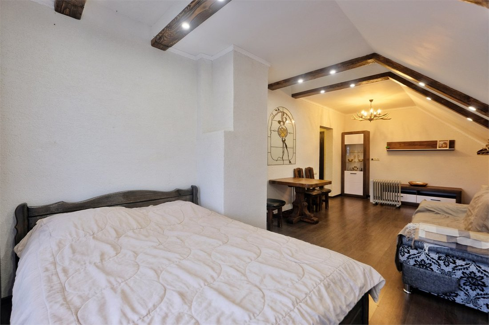

Своя кухняАпартаменты-студия
до 4 гостейПросторные светлые апартаменты с отдельным входом, деревянными балками, уютной спальной зоной и полностью оборудованной кухней.
- Собственная кухня (плита, холодильник, СВЧ)
- Двуспальная кровать + раскладной диван
- Питание в столовой по желанию